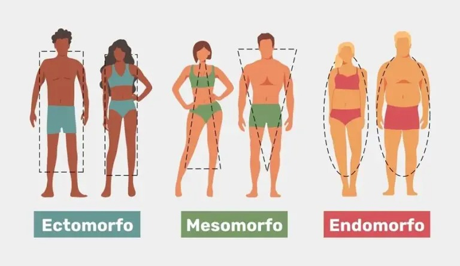

Exercícios aeróbicos
Antes de iniciar qualquer prática física estruturada, pergunte ao seu médico de confiança se está liberado para os exercícios e procure orientação de um profissional de educação física caso tenha dores na execução de algum deles. Os aeróbicos de intensidade moderada ajudam, entre outros aspectos, na prevenção e controle de condições cardiovasculares, obesidade, diabetes e estresse. De acordo com o Guia de Atividade Física para a População Brasileira, uma atividade física moderada é aquela em que sua respiração é mais rápida e onde os seus batimentos cardíacos se elevam. Ainda é possível falar durante a execução do exercício, porém com dificuldade. Veja algumas opções de exercícios desse tipo!
Classificações
Biotipo ectomorfo
Os principais atributos do biotipo ectomorfo são corpo magro, alongado, com ombros estreitos e membros (braços e pernas) compridos. O formato é semelhante ao de um retângulo. Comumente, eles têm o metabolismo naturalmente acelerado, fazendo com que percam peso com facilidade, por outro lado, têm dificuldade para ganhar peso e massa muscular (hipertrofia). Quando existe o objetivo de ganhar massa magra, a dieta para este biotipo corporal prioriza a ingestão de proteínas e gorduras boas de carnes magras (frango, salmão e ovo), frutas (abacate), linhaça, azeite, nozes e cereais integrais. Os exercícios que favorecem o fortalecimento muscular são os indicados como musculação, yoga e pilates. Treinos aeróbicos podem ser incluídos, com menos frequência, para garantir a um boa capacidade cardiorrespiratória.
Biotipo mesomorfo
O biotipo mesomorfo também é um corpo magro, com facilidade para hipertrofia, mesmo sem muito exercício, e pouco acúmulo de gordura na região abdominal. O metabolismo também é mais rápido. O tronco é alongado e a cintura e o quadril mais estreitos (formato de triângulo invertido) ou mais largos (corpo formato triângulo). A dieta para este biotipo corporal tende para o equilíbrio entre proteínas, legumes, frutas e fontes de fibra para garantir uma boa nutrição. Como o mesomorfo tem facilidade para ganhar gordura, alimentos ricos em açúcar, produtos industrializados e gordurosos são reduzidos. Os exercícios físicos unem tanto atividades aeróbicas quanto de força para manter o percentual de gordura controlado e o volume de massa magra adequado.
Biotipo endomorfo
A última categoria é o biotipo endomorfo que é comum em pessoas mais baixas. O formato ovalado do corpo é mais largo e tende ao acúmulo de gordura abdominal e no quadril. O metabolismo lento é uma característica que favorece o ganho de gordura e dificulta a perda de peso. Nesse caso, a dieta é mais controlada para equilibrar o peso, reduzindo a quantidade de carboidrato e investindo em fibras que prolongam a sensação de saciedade. Nos exercícios físicos, o foco é no ganho de massa muscular combinado com atividades aeróbicas, como esteira e caminhadas para agilizar a queima de gordura.